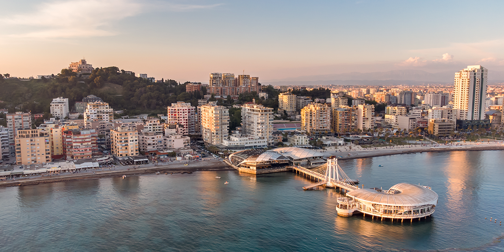

Durrës

Informacion për Durrësin
Informacione të përgjithshme
Vendndodhja: Shqipëria perëndimore, buzë Detit Adriatik
Popullsia: Rreth 122,000 banorë
Qarku: Qarku i Durrësit
Statusi UNESCO: Durrësi nuk ka status të veçantë UNESCO, por ka shumë vende historike të rëndësishme.
Pse është i veçantë Durrësi
Durrësi është një nga qytetet më të vjetra dhe më të rëndësishme në Shqipëri, me histori që daton që nga koha e Ilirëve dhe Romakëve. Është një port detar kryesor dhe destinacion i njohur turistik, sidomos për plazhet dhe kulturën e tij të pasur historike.
Vendet kryesore për të vizituar
- Arena e Durrësit: Amfiteatri romak i ndërtuar në shekullin e II-të, një nga më të mëdhenjtë në Ballkan.
- Kalasë e Durrësit: Një kështjellë mesjetare me mure të mëdha dhe muze historik.
- Muzeu Arkeologjik i Durrësit: Me zbukurime dhe artefakte nga periudha antike.
- Plazhet e Durrësit: Plazhe të gjera me rërë të artë dhe mundësi të shumta për sporte ujore.
Trashëgimi kulturore dhe fetare
Durrësi është një qytet me trashëgimi të pasur kulturore dhe fetare, ku bashkëjetojnë ndikime nga periudha të ndryshme historike, duke përfshirë periudhën romake, bizantine dhe osmane.
Produkte vendase
- Produkte deti: Peshku dhe fruta deti të freskëta, të njohura për shijen dhe cilësinë.
- Verë dhe produkte bujqësore: Zona rreth Durrësit prodhon verëra cilësore dhe fruta të ndryshme.
- Gastronomia lokale: Gatime tradicionale si byrekë, tavë dhe pjatat me peshk të freskët.
Natyra dhe aktivitetet
- Plazhet e Durrësit: Relaksim, sporte ujore dhe aktivitete turistike gjatë verës.
- Deti Adriatik: Mundësi për varka, peshkim dhe sporte të tjera ujore.